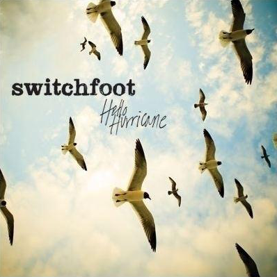
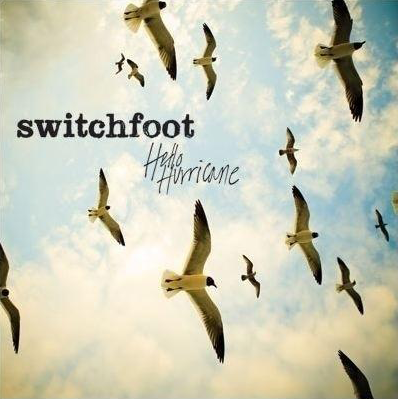

- 岁月神偷--周笔畅
- 岁月神偷--金玟岐
- 岁月神偷--汪苏泷
- 岁月神偷--不才
- 岁月神偷（磁性男声版）（Cover：金玟岐）--于大海（于黑蛋）

 

-

- Teoeo_
- 你没听出来汪老师一直在配合刘乐瑶唱吗，他大部分时间在给刘乐瑶和音，而且唱的是女生的key，因为是孩子们的节目，他想让孩子更多的展现自己的优点，所以汪老师尽量地配合刘乐瑶的声音唱，如果是汪苏泷一个人唱，他不会这样唱的。